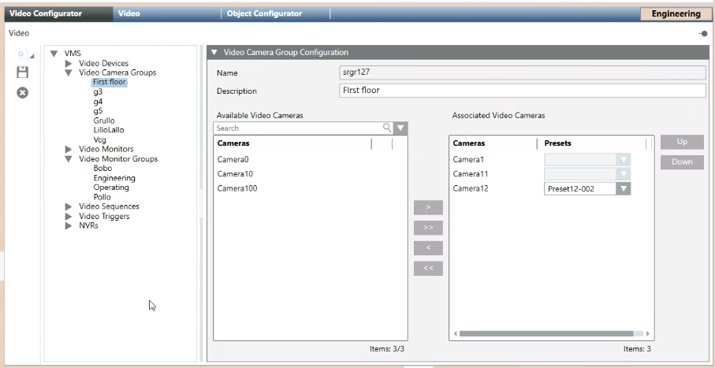

Configuring Video Camera Groups
It is possible to configure a group of cameras that can be accessed with a single action. For example, if a group of cameras is set up for each floor of a building, an operator can quickly view the cameras of an entire floor by simply selecting its camera group.
Prerequisites
- Desigo CC is configured to support video surveillance. See Integrating Video Surveillance.
- System Manager is in Engineering mode.
- System Browser is in Application View.
NOTICE

Updating of objects in System Browser
The configurations described here are done in the Video Configurator tab:
- The changes will propagate to System Browser when the Video System is Connected. See Connecting the Video System.
- In case of video objects added, renamed or removed, a Sort command may also be needed, to correctly regroup objects in System Browser. See Grouping Video Objects.
View the Existing Camera Groups
- In System Browser, select Application > Video.
- In the Video Configurator tab, expand the Video Camera Groups folder in the VMS tree.
- Any camera groups already configured in the system display in the VMS tree.

Delete a Camera Group
Complete these steps to remove a camera group that is no longer needed. This will not delete any of the cameras included in the group.
- In the Video Configurator tab, select VMS > Video Camera Groups > [camera group].
- Click
 .
. - Click Yes to confirm.
- The camera group is removed from the VMS tree and from Applications> Video > Camera Groups in System Browser.
Rename a Camera Group
The name of a camera group is read-only. But you can edit its description as follows.
- In the Video Configurator tab, select VMS > Video Camera Groups > [camera group].
- In the Video Camera Group Configuration expander, edit the Description of the camera group.
- Click Save
 .
.
- The description of the camera is updated in the VMS tree and in System Browser.
Create a New Camera Group
- In the Video Configurator tab, select VMS > Video Camera Groups.
- Click New
 , and select Add a New Video Camera Group.
, and select Add a New Video Camera Group. - In the Video Camera Group Configuration expander, enter a Description for the camera group.
NOTE: The following characters are not allowed in the Description text: “.” (period), “:” (colon), “?” (question mark), “*” (asterisk). - Click Save .
- The new camera group is added to the Video Camera Groups folder of the VMS tree and under Applications > Video > Camera Groups in System Browser.
Select the Cameras to Include in a Group
- In the Video Configurator tab, select VMS > Video Camera Groups > [camera group].
- The Video Camera Group Configuration expander displays the list of available cameras on the left, and the cameras included in this group on the right.
- Use
 or
or  to add more cameras to this group.
to add more cameras to this group. - Use
 or
or  to remove cameras from this group.
to remove cameras from this group. - For PTZ cameras, scroll the destination list to the right and select the initial Preset position for the camera.
- For large lists, to help you find a particular camera:
a. in the Search field, type a few characters of the description with wildcards (* for any string, or ? for exactly one character).
b. Click Search or press ENTER.
or press ENTER. - Only the cameras that match the search criteria are shown. Underneath each list, Items indicates
number of cameras shown/total number of cameras.
NOTE: Click x to clear the search. To repeat a previous search, select it from the drop-down list. - Use the Up and Down buttons to change the order of the cameras in the camera group.
- Click Save .
- The changes propagate to the Camera Groups folder of System Browser.
Check How a Camera Group Displays
- To preview the result, in System Browser select Applications > Video > Camera Groups > [camera group].
- Images from the camera group populate the video view as far as the current layout can accommodate them. Select a layout with more monitors if needed.